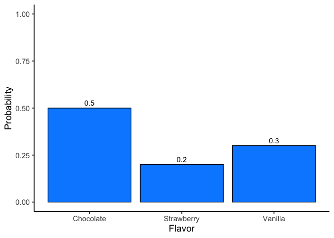
3 Probability and Distributions
I have studied many languages, French, Spanish, and a little Italian, but no one told me that Statistics was a foreign language.
Charmaine J. Forde
3.1 From description to inference
Chapter 1 covered study design and describing a single variable with graphs and averages, and Chapter 2 described the relationship between two variables with correlation and a best-fit line. Statistics also lets us do inference. Inference uses data from a sample to draw conclusions about the broader population the sample came from. Inference relies on two foundations: probability theory and the behavior of samples from distributions. This chapter covers probability rules and distributions first, then how samples behave: the law of large numbers, the sampling distribution of the mean and its standard error, and the central limit theorem. It ends with \(z\)-scores, estimating a population’s standard deviation, and the confidence interval.
3.2 Probability vs. statistics
Probability and statistics reason in opposite directions between a model and data.
Probability starts with a known model of the world and asks what kinds of data are likely. A model here is a description of the process that produces the data, such as a fair coin or a well-shuffled deck.
- Example: What is the chance of flipping 10 heads in a row with a fair coin?
- Example: What is the chance of drawing five hearts from a shuffled deck?
Here, the model is known. Data are imagined.
Statistics starts with data and asks: what model of the world generated these data?
- Example: If a coin comes up heads 10 times in a row, is it fair?
- Example: If five cards in a row are hearts, was the deck shuffled?
Here, the data are known. The model is what we want to learn about.
NoteNote: Which direction?
Probability goes model → data.
Statistics goes data → model.
3.3 What does probability mean?
Statisticians agree on the rules of probability but not always on what the word itself means. In everyday life we’re comfortable saying something is “likely” or “unlikely,” but the formal meaning varies.
Imagine a soccer game between Arsenal and West Ham. You say Arsenal has an 80% chance of winning. That could mean:
Long-run frequency: if the teams played many times, Arsenal would win ~8 out of 10.
Betting odds: you’d only take a wager if payoffs reflected an 80/20 split.
Subjective belief: your confidence that Arsenal wins is four times your confidence that it doesn’t.
All three interpretations follow the same rules, so the math works the same whichever one you hold. The frequentist view defines probability as the long-run proportion of times an event would occur if the process were repeated many times. This is interpretation 1 above, and it is the view this course uses.
3.4 Basic probability theory
The core idea of probability theory is the probability distribution. Chapter 1 used distribution for the pattern of values in a dataset. A probability distribution assigns probabilities to all the outcomes a process can produce, and the Probability distributions section below defines it formally.
Suppose each customer picks one ice cream flavor: chocolate, vanilla, or strawberry. If we record how often each flavor is chosen, we might estimate the probabilities in Table 3.1.
| Flavor | Probability |
|---|---|
| Chocolate | \(P(\text{chocolate})=0.5\) |
| Vanilla | \(P(\text{vanilla})=0.3\) |
| Strawberry | \(P(\text{strawberry})=0.2\) |
These probabilities form a distribution, plotted in Figure 3.1. Each value lies between 0 and 1, and together they sum to 1: \(0.5 + 0.3 + 0.2 = 1\).
A probability can also be about a group of outcomes. For example, let \(A=\) “not chocolate.” Then:
\[P(A) = P(\text{vanilla}) + P(\text{strawberry}) = 0.3 + 0.2 = 0.5\]
Expected value
The expected value of a probability distribution is its mean, the long-run average of the outcomes if the random process were repeated forever.
A random variable is any quantity whose value is not settled in advance, such as the face a die will show or the number of rainy days next month. A random variable is discrete when its possible values are separate and countable, such as the faces of a die (see Probability distributions, below). For a discrete random variable \(X\) with outcomes \(x_i\) and probabilities \(P(X=x_i)\), the expected value is a probability-weighted average:
\[\mu = E[X] = \sum_i x_i \, P(X=x_i)\]
The symbol \(\mu\) is used because the expected value is the mean of the distribution. Later in this chapter the same symbol names the population mean.
Each outcome is weighted by its probability, so likely outcomes count more toward the expected value than unlikely ones.
Worked example: a fair die. Roll a fair six-sided die. Each face, 1 through 6, is equally likely, \(P(X=x_i)=1/6\) for every face:
\[E[X] = (1)(1/6) + (2)(1/6) + (3)(1/6) + (4)(1/6) + (5)(1/6) + (6)(1/6) = 21/6 = 3.5\]
The expected value, 3.5, is not itself a possible outcome. You can never roll a 3.5. The expected value is a long-run average across many rolls, not a prediction for any single roll. The average of the rolls in one sample is a sample mean, \(\bar{x}\), and it varies from sample to sample around the expected value.
Change the probabilities and the expected value moves. Take a die manufactured with a defect: two faces show 2, and no face shows 3, so the faces are 1, 2, 2, 4, 5, 6. The outcomes 1, 4, 5, and 6 each have probability \(1/6\), and the outcome 2 has probability \(2/6\):
\[E[X] = (1)(1/6) + (2)(2/6) + (4)(1/6) + (5)(1/6) + (6)(1/6) = \frac{1+4+4+5+6}{6} = \frac{20}{6} \approx 3.33\]
Replacing the 3 with a second 2 lowers the expected value from 3.5 to about 3.33, because a low outcome now has more of the probability.
Expected value comes back twice. Later in this chapter it defines “unbiased”: an estimator is unbiased when its expected value equals the true population parameter. In Chapter 7, a chi-square test’s “expected count” uses the same probability-weighted logic, applied to counts instead of individual outcomes.
3.5 Conditional probability and independence
This course needs two of probability’s formal rules for combining events, conditional probability and independence. An introductory probability course would work through the full set.
3.5.1 Conditional probability
A conditional probability is the probability of one thing given that something else has already happened. Instead of asking how likely an event is among all outcomes, you count only the outcomes where the condition already holds and ask how likely the event is among those. A stream might exceed a nutrient threshold on 20% of all days, but on 60% of days following heavy rain. The stream is the same in both cases. The second probability is different because it only counts days after heavy rain.
We write the second one as \(P(\text{exceed} \mid \text{heavy rain}) = 0.60\), read “the probability of exceeding the threshold given heavy rain.” The event you are asking about goes to the left of the bar, and the condition you already know goes to the right.
The order matters. Suppose heavy rain comes before 10% of days. Then 6% of all days are rainy days that exceed the threshold (60% of 10%). This 6% is the probability that both things happen on a day, counted among all days. The conditional probabilities count among a smaller group of days. Among the 20% of days that exceed it, those 6% give \(P(\text{heavy rain} \mid \text{exceed}) = 0.06/0.20 = 0.30\). The division follows the general rule for a conditional probability, \(P(A \mid B) = P(A \text{ and } B)/P(B)\), which keeps only the days where the condition holds. Flipping the two sides of the bar turned 0.60 into 0.30, because each version counts within a different group of days.
The step from 60% of 10% to 6% is the multiplication rule. The probability that two events both happen is the probability of the first times the conditional probability of the second given the first:
\[P(\text{both}) = P(\text{first}) \times P(\text{second} \mid \text{first})\]
Here, \(P(\text{heavy rain and exceed}) = 0.10 \times 0.60 = 0.06\).
Every inference from here on uses a conditional probability. A \(p\)-value, which Chapter 4 introduces, is a conditional probability. It is the probability of data at least this extreme given that the null hypothesis, also introduced in Chapter 4, is true.
3.5.2 Independence
Two events are independent when knowing that one occurred tells you nothing about whether the other did. In symbols, \(P(\text{first} \mid \text{second}) = P(\text{first})\).
Independence simplifies the multiplication rule. When two events are independent, \(P(\text{second} \mid \text{first}) = P(\text{second})\), so the probability that both happen is the product of their separate probabilities:
\[P(\text{both}) = P(\text{first}) \times P(\text{second})\]
Two coin flips are independent. A head on the first flip does not change the probability of a head on the second. Two soil samples taken a meter apart usually are not, because nearby soil tends to be alike, so knowing one sample’s nitrogen content tells you something about its neighbor’s.
Every test in this book requires independent observations. Chapter 6 states this assumption once, and later chapters refer back to it.
Independence also gives a result used in Chapter 8. Run \(m\) independent tests, each with a 5% chance of a false positive, a test result that signals an effect when there is none (Chapter 5 calls this a Type I error). By the multiplication rule applied \(m\) times, the chance that none of them gives a false positive is \((1-0.05)^m\), so the chance of at least one false positive is \(1-(1-0.05)^m\). For 5 and 10 tests:
\[\begin{aligned} m = 5: \quad 1 - 0.95^5 &= 1 - 0.77 = 0.23 \\ m = 10: \quad 1 - 0.95^{10} &= 1 - 0.60 = 0.40 \end{aligned}\]
3.6 Probability distributions
A probability distribution is a rule that assigns probabilities to all possible outcomes of a random variable. Many distributions exist, but this book mostly uses five: binomial, normal, \(t\), \(\chi^2\) (“chi-square”), and \(F\). We focus on the binomial and the normal here. The others appear when we get to inference.
The binomial and the normal represent two kinds of distributions: discrete and continuous.
Discrete distributions assign a probability to each of a set of separate, countable values, such as 0, 1, 2, … heads.
Continuous distributions apply to variables that can take any value in a range, such as temperature. Probabilities for them are measured as areas under a curve, explained in What’s probability density? below.
3.6.1 The binomial distribution (discrete)
The binomial distribution models the number of “successes” in a fixed number of independent trials.
- A trial is a single attempt with two possible outcomes. One outcome is labeled the success, which is only a name for the outcome you are counting and carries no good or bad meaning. An exceedance day is a success if exceedances are what you count. The other outcome is the failure.
- The success probability is the chance of success on any one trial, usually written as \(\theta\).
- The size parameter \(n\) is the number of trials.
- The random variable \(X\) is the number of successes observed in those \(n\) trials.
We write this as:
\(X \sim \text{Binomial}(n, \theta)\)
For example, if you flip a fair coin 20 times (\(n=20\), \(\theta=0.5\)), the binomial distribution tells you the probability of getting 0 heads, 1 head, 2 heads … all the way up to 20 heads. The bars of the distribution in Figure 3.2 show the probability of each outcome, and the total always sums to 1.
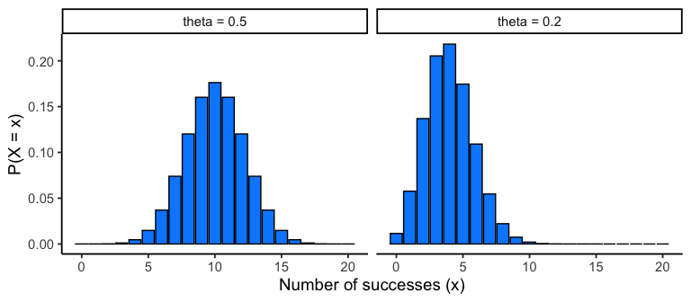
Table 3.2 shows how \(\theta\) sets the shape of a binomial distribution. In Figure 3.2 the left panel (\(\theta = 0.5\)) is symmetric and the right panel (\(\theta = 0.2\)) is right-skewed.
| Success probability | Shape of \(\text{Binomial}(n, \theta)\) |
|---|---|
| \(\theta = 0.5\) | Symmetric |
| \(\theta < 0.5\) | Right-skewed |
| \(\theta > 0.5\) | Left-skewed |
Two common questions
- Exact probability. For example, the chance of exactly 4 heads: \(P(X=4)\)
dbinom(x = 4, size = 20, prob = 0.5)
#> [1] 0.004620552The probability is about \(0.5\)%.
- Cumulative probability, the probability of a value at or below a cutoff. For example, \(P(X \leq 4)\):
pbinom(q = 4, size = 20, prob = 0.5)
#> [1] 0.005908966The probability is about \(0.6\)%.
This is higher than the 0.5% for exactly 4 heads because it also includes the probability of getting 3, 2, 1, or 0 heads.
NoteNote: R’s distribution helpers
Every distribution in R comes with the same four functions:
- d* = exact probability for a discrete distribution, or density (the curve’s height) for a continuous one
- p* = cumulative probability \(P(X \le q)\)
- q* = quantile, the value with a given cumulative probability below it (p* in reverse)
- r* = random draws
For binomial: dbinom, pbinom, qbinom, rbinom. For discrete distributions, some percentiles don’t exist exactly. In that case qbinom() returns the smallest \(x\) whose cumulative probability, \(P(X \le x)\), reaches at least \(p\).
3.6.2 The normal distribution (continuous)
The normal distribution describes variables that can take on a wide range of values, clustered around a central point. The normal distribution is the one this book uses most. It’s also sometimes called a Gaussian distribution or a bell curve.
- The mean \(\mu\) is the center of the distribution.
- The standard deviation \(\sigma\) measures spread: how tightly or widely values are clustered around the mean.
- The random variable \(X\) represents the outcome, which can be any real number.
We write this as:
\(X \sim \text{Normal}(\mu, \sigma)\)
The standard normal distribution is the normal distribution with \(\mu = 0\) and \(\sigma = 1\). A variable with this distribution is written \(Z\), so \(Z \sim N(0, 1)\), and one value of it is a \(z\)-score (Section 3.12). Figure 3.3 shows it.
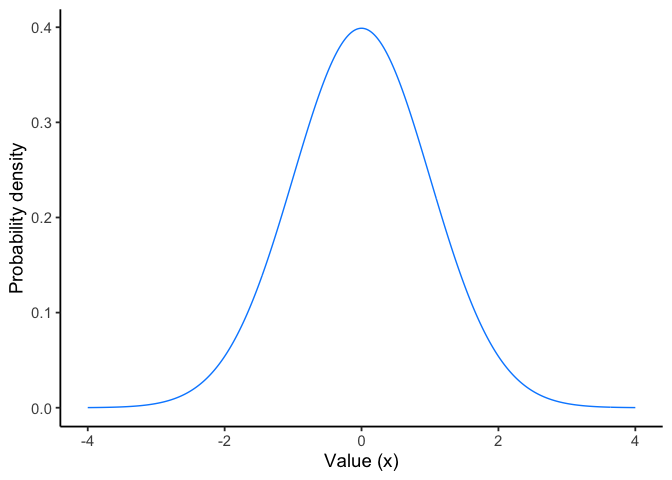
NoteNote: A single value has probability 0
For a continuous variable, the probability of any single exact point is 0, so probability is always an area under the curve.
Changing \(\mu\) shifts the curve left or right. Changing \(\sigma\) makes it wider or narrower. The total area under the curve is always 1.
Figure 3.4 shades the area between −1 and 1, which is about 0.68 of the total.
Areas under every normal curve follow the 68-95-99.7 rule, which Section 3.12 uses again.
The 68-95-99.7 rule
~68% of values fall within \(1\sigma\) of the mean
~95% fall within \(2\sigma\)
~99.7% fall within \(3\sigma\)
The 2 in the 95% line is rounded. The exact cutoff for 95% is 1.96 standard deviations.
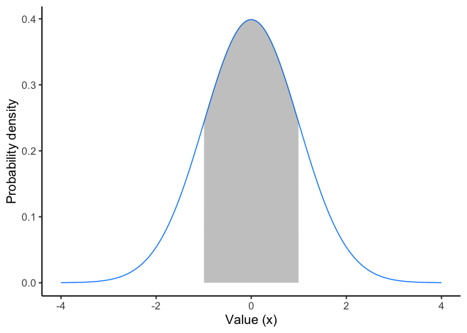
Two common questions
- Probability of being below a value, e.g. \(P(X \leq 1.64)\) for \(X \sim \text{Normal}(0,1)\)
pnorm(q = 1.64, mean = 0, sd = 1)
#> [1] 0.9494974In a normal distribution with a mean of 0 and standard deviation of 1, the probability the value is less than or equal to 1.64 is about 95%.
“Less than or equal to” and “less than” give the same answer here. In general, \(P(X \ge a) = P(X > a) + P(X = a)\), and for a continuous variable that last term is zero. Setting lower.tail = FALSE tells pnorm() to return the area above the cutoff instead of below it. So pnorm(q = 1.64, mean = 0, sd = 1, lower.tail = FALSE) gives both \(P(X > 1.64)\) and \(P(X \ge 1.64)\), and R never has to decide whether the cutoff itself is included. For a discrete variable like the binomial, \(P(X = a)\) is a bar with nonzero height, so the two are different. With 20 fair coin flips, \(P(X \le 4)\) is about 0.6%, but \(P(X < 4) = P(X \le 3)\) is about 0.1%.
- Value for a percentile, e.g. the 97.5th percentile:
qnorm(p = 0.975, mean = 0, sd = 1)
#> [1] 1.959964The 97.5th percentile of the standard normal is 1.96, so 2.5% of the area is above 1.96 and another 2.5% is below \(-1.96\). This 1.96 is the cutoff the 95% confidence interval uses at the end of this chapter.
3.6.3 What’s probability density?
For continuous distributions like the normal, probabilities belong to ranges of values instead of to single values. You cannot ask for the probability of one exact value (e.g., \(P(X = 23)\)), because the answer is zero. Instead, we calculate the probability of being in a range, such as \(22.5 \leq X \leq 23.5\).
Probability density is the height of a continuous distribution’s curve at a point, written with a lowercase \(p\), \(p(x)\), to keep it separate from a probability, \(P(X)\). The \(y\)-axis of a normal curve shows density. A density is not itself a probability. Probabilities come from the area under the curve between two values. For example, about 68% of values from a standard normal fall between −1 and 1, because the area between −1 and 1 is 0.68.
In R, functions like dnorm() return the density (the curve’s height), while pnorm() and qnorm() work with cumulative probabilities and quantiles, which are usually more useful for applied problems.
Table 3.3 sets the binomial and normal distributions side by side.
| Binomial | Normal | |
|---|---|---|
| Outcome | Discrete, a count | Continuous |
| Describes | The number of successes in \(n\) independent trials, each with two possible outcomes | A variable that can take a wide range of values, clustered around a central point |
| Set by | \(n\) and \(\theta\) | \(\mu\) and \(\sigma\) |
| Shape | Set by \(\theta\) (Table 3.2) | Always symmetric and bell-shaped |
| Possible values | \(0\) to \(n\) | Any real number |
| A probability is | The height of a bar | An area under the curve |
3.7 Samples, populations and sampling
Descriptive statistics summarize what we do know. Inferential statistics is the branch of statistics that carries out inference, drawing conclusions from sample data about populations or about causal relationships. It aims to “learn what we do not know from what we do.” Introductory statistics typically divides inference into two big ideas, estimation and hypothesis testing. Estimation uses sample data to give a best guess of a population value, along with how uncertain that guess is. This chapter introduces estimation, and Chapter 4 introduces hypothesis testing. Estimation only makes sense once you understand how samples relate to populations, so this section covers sampling first.
To talk about making inferences, we must be clear about what we are drawing inferences from (the sample) and what we are drawing inferences about (the population).
A sample is the finite set of data points a study actually collects. In almost every study, the sample is all we have. We cannot survey every voter in a country or measure every tree in a forest.
3.7.1 Defining a population
A population is the set of all possible individuals or observations you want to draw conclusions about, and it is usually much larger than the sample. Ideally you would define the population before designing the study, because the definition shapes the design. In practice, the population is often only loosely defined. A study of “stream temperature in Indiana” may never say which streams, or which months, count. Still, the sample should represent some broader population we care about.
3.7.2 Simple random samples
The sampling method is the procedure used to choose which members of the population end up in the sample. The relationship between a sample and its population depends on it.
Suppose we have a bag with 10 chips, each uniquely labeled, some black and some white. This bag is the population. A simple random sample is a sample chosen so that every member of the population has the same chance of being selected. If we shake the bag and draw 4 chips without replacement (no chip goes back in the bag), each chip has the same chance of being selected, so the 4 chips are a simple random sample. Figure 3.5 shows three such samples.
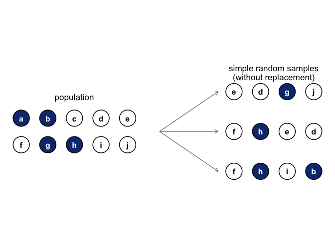
Now imagine a different procedure: someone peeks inside and deliberately picks only black chips. That is a biased sample, one where some part of the design (who, where, when, or how you measure) pushes results in one direction, on purpose or not. More data does not fix it. Figure 3.6 shows three biased samples drawn this way. With a random sample, we can use statistical tools to generalize from the sample to the population. With a biased sample, we cannot. Every chip in the three biased samples is black, so they would put the proportion of black chips at 1, while in the population it is 0.4 (4 of 10).
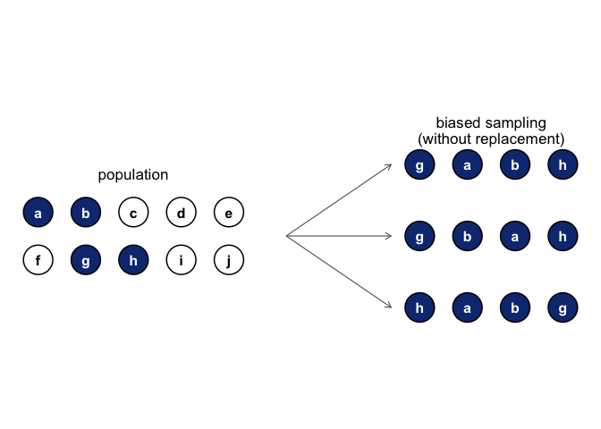
Another variation is to draw chips with replacement, meaning each chip is returned to the bag before the next draw. In Figure 3.7, some letters repeat within a sample for that reason. In practice, most studies are “without replacement,” but much of statistical theory assumes replacement. When the population is large, the difference is negligible. With 10 chips, removing the first chip changes each remaining chip’s chance from 1/10 to 1/9. With 10,000 items, the change is from 1/10,000 to 1/9,999.
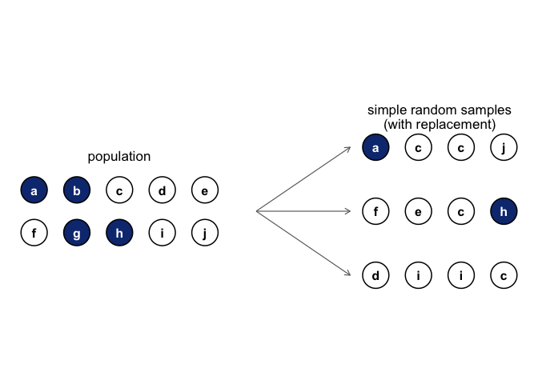
3.7.3 Random and non-random samples in practice
Random samples are the ideal, and in many areas of environmental science they are common. Inventory plots, transects, and monitoring networks are usually placed at random, so that every location has a known chance of being chosen. Still, many studies rely on modified approaches:
- Stratified sampling divides the population into subgroups (strata) and samples within each. This guarantees that small groups, such as rare habitat types, appear in the sample.
- Opportunistic or logistically constrained sampling selects cases that are accessible or already monitored. These are not random, but they are common in practice when budgets, terrain, or historical networks limit where data can be collected.
3.7.4 How much does it matter if you don’t have a random sample?
A non-random sample matters when the way you sampled could plausibly distort the conclusions. Stratified sampling that deliberately oversamples small strata over-represents those groups. The analysis corrects for this by weighting each stratum, the same idea as the weighted mean in Chapter 1, so that each stratum counts in proportion to its share of the population. Opportunistic samples can be acceptable if the bias is unlikely to affect the phenomenon being studied. For example, if you want to study tree growth rates, sampling only trees on one side of a valley may or may not be problematic, depending on whether the valley side influences growth. If the north-facing side gets less sun and its trees grow more slowly, a sample from that side alone would underestimate growth for the whole valley.
When designing your own studies, choose a sampling method that reaches the whole population you want to draw conclusions about. And when critiquing others, be specific about how a sampling choice might bias results. Noting that a sample is not random does not say which way the results would be off.
Table 3.4 summarizes the four sampling methods in this section, each with an example from this chapter.
| Method | What it means | Example |
|---|---|---|
| Simple random | Every unit has the same chance of being selected | Shake the bag and draw 4 of the 10 chips |
| Stratified | Divide the population into subgroups (strata) and sample within each. Small strata are over-represented, and weighting each stratum in the analysis corrects for it. | Sample within each habitat type so that rare habitat types appear in the sample |
| Opportunistic | Select cases that are accessible or already monitored. Acceptable if the constraint is unlikely to affect what you are measuring. | Measure tree growth on only one side of a valley |
| Biased | Some part of the design (who, where, when, or how you measure) pushes results in one direction, on purpose or not. More data does not fix it. | Survey adults about coffee consumption only inside coffee shops |
3.7.5 Population parameters and sample statistics
So far we have talked about populations the way a scientist might: a group of people, a stand of trees, a set of rivers. Statisticians describe a population with a probability distribution. The distribution gives the probability of each value that a randomly chosen member of the population could have.
Population parameters are the numbers that describe a population distribution, such as its mean \(\mu\) and standard deviation \(\sigma\). For example, suppose daily coffee consumption in adults follows an approximately normal distribution with mean \(\mu = 2\) cups/day and standard deviation \(\sigma = 1\) cup/day. These two numbers are the population parameters.
![Three side-by-side panels. Panel a shows the population's bell-shaped density curve, centered at 2 cups per day. Panel b overlays that same curve on a histogram of a sample of 100 draws, which roughly follows the curve's shape but with visible bumps and gaps. Panel c overlays the curve on a histogram of a sample of 10,000 draws, which follows the bell shape far more closely and smoothly than the smaller sample. Each sample panel's title gives that sample's mean and standard deviation, and each has a lime-green dotted vertical line at the sample mean beside a dashed orange vertical line at the population mean of 2.](03-SamplesPopulations_files/figure-html/fig-3coffeeDist-1.png)
Now suppose we take a random sample of 100 adults, shown as the histogram in panel (b) of Figure 3.8. The histogram follows the population’s bell shape, with bumps and gaps the population curve does not have. This sample’s mean is 2.07 cups and its standard deviation is 0.99 cups, close to \(\mu = 2\) and \(\sigma = 1\) but not equal to them.
Panel (c) shows a second random sample, this one of 10,000 adults. Its histogram follows the population curve more closely than the sample of 100 does. The next section returns to this comparison.
Sample statistics are numbers calculated from the data in a sample, such as \(\bar{x}\) and \(s\). This sample’s mean and standard deviation are sample statistics. They approximate the population parameters, which describe the entire distribution. The central problem of inference is how to use sample statistics to estimate population parameters, and how much confidence we can place in those estimates.
A statistic describes your data. An estimate is your best guess about the matching population parameter. An estimator is the formula that produces the estimate, such as “add up the values and divide by \(n\).” The estimate is the number that formula gives for one sample. For the mean, the statistic and the estimate are the same number, \(\hat\mu = \bar x\), as the table shows.
| Symbol | What is it? | Do we know it? |
|---|---|---|
| \(\bar{x}\) | Sample mean | Yes, calculated from the raw data |
| \(\mu\) | True population mean | Almost never known for sure |
| \(\hat{\mu}\) | Estimate of the population mean | Yes, for simple random samples \(\hat\mu=\bar x\) |
3.8 The law of large numbers
In the last section we compared a small sample of coffee drinkers (\(n=100\)) to a much larger sample (\(n=10{,}000\)). The larger sample produced a histogram that looked much closer to the population distribution. Its mean, 2.02 cups (shown above panel c), was also closer to the population mean, \(\mu = 2\) cups/day, than the smaller sample’s mean of 2.07 cups.
This illustrates the law of large numbers. As the sample size grows, the sample mean \(\bar{x}\) settles near the population mean \(\mu\). Symbolically:
\[n \to \infty \quad \Rightarrow \quad \bar{x} \to \mu\]
Although easiest to see with the mean, the law applies to many sample statistics: proportions, variances, correlations, and more.
Jacob Bernoulli first formalized the law of large numbers in 1713. Averaging over more observations does reduce what he called the “danger of wandering from one’s goal.”
In practice, any single sample statistic will differ somewhat from the population parameter. Even the sample of 10,000 in Figure 3.8 has a mean of 2.015 cups, not exactly 2.
The law of large numbers needs random sampling. \(\bar{x}\) settles near the mean of whatever population your sampling method actually reaches. Survey 10,000 people inside coffee shops and \(\bar{x}\) will settle, very precisely, on the average for coffee-shop customers, which is not the average for all adults.
A larger sample shrinks sampling error, the gap between a sample statistic and the population value that comes from seeing only a subset. It does nothing about bias, such as a sampling method that consistently reaches the wrong people. So a random sample of 100 adults can give a better estimate of the adult average than a sample of 10,000 coffee-shop customers. Its estimate varies more from sample to sample, but it converges on the right population mean.
3.9 Sampling distributions
The law of large numbers tells us that with enough data, our sample mean will get close to the population mean. But in practice, we never have infinite data. We need a way to describe how the sample mean behaves with finite samples. The sampling distribution of the sample mean describes that behavior.
3.9.1 Sampling distribution of the sample mean
- A sample mean is the average of the values in one sample.
- A sampling distribution is the distribution of a statistic, such as the mean, across many samples of the same size \(n\).
The sampling distribution of the sample mean is the distribution of the means of many samples of size \(n\), as if the study were repeated many times.
The sampling distribution tells us how much the sample mean varies from sample to sample, and how close we can expect it to be to the population mean.
Three distributions come up in this section, and they are easy to confuse:
| Distribution | What it contains | Center | Spread | Its shape |
|---|---|---|---|---|
| Population distribution | Every value in the population | \(\mu\) | \(\sigma\) | Whatever shape the population has |
| One sample | The \(n\) values you collected | \(\bar{x}\) | \(s\) | Roughly the population’s shape, with noise |
| Sampling distribution of the sample mean | One mean from each of many samples of size \(n\) | \(\mu\) | \(\sigma/\sqrt{n}\), the standard error | Close to normal once \(n\) is large enough |
A bigger sample makes the second row look more like the first (Figure 3.8). It does not make your data look normal. A sample of 500 household electricity bills is still right-skewed, because the population of bills is. The central limit theorem, defined later in this chapter, is a statement about the third row only.
3.9.2 Building a sampling distribution step by step
We can build a sampling distribution in four steps:
- Start with a distribution to sample from.
- Draw repeated random samples of the same size \(n\).
- Compute the mean of each sample.
- Plot those means in a histogram.
For example, suppose we draw numbers from a uniform distribution on 1 to 10, where each whole number from 1 to 10 has the same probability, 0.1 (Figure 3.9).
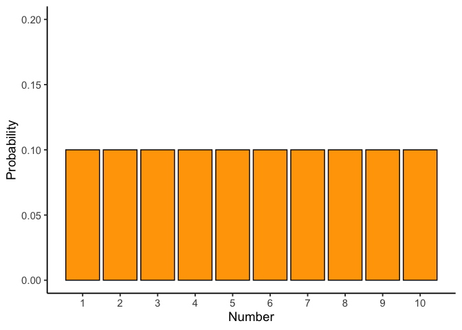
Figure 3.10 shows three samples of 20 numbers drawn from this population. Each dot is one number drawn, and the lime-green dotted line marks that sample’s mean. The three samples look different from each other, and their means, given in the panel titles, differ too.
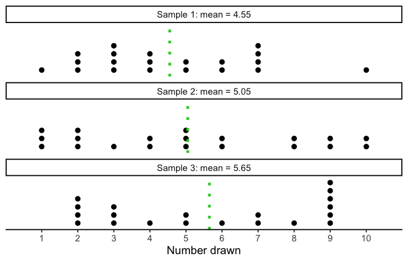
If we repeat this 10,000 times and plot all the sample means, we get a close picture of the sampling distribution of the sample mean for samples of size 20.
This simulation uses two different numbers. The sample size, \(n = 20\), is how big each study is. The 10,000 is how many times we repeat the study. The spread of the histogram is set by \(n\). The 10,000 only controls how smooth the histogram looks. Drawing 100,000 samples of size 20 would give a smoother histogram of the same width.
Before you look. Each bar in Figure 3.11 counts sample means, and each mean comes from one sample of 20 numbers like those in Figure 3.10. The raw numbers are spread evenly from 1 to 10. Decide whether you expect the histogram of means to be flat like the population, and whether you expect the means to spread over the whole range from 1 to 10 or over a narrower range.
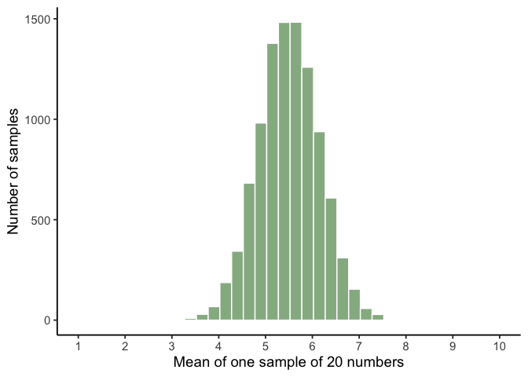
The histogram of means in Figure 3.11 is not flat. It is bell-shaped and centered on 5.5, the population mean. The means also spread over a much narrower range than the raw numbers. The middle 99% of them fall between 3.9 and 7.2, while the raw numbers run from 1 to 10. The histogram of sample means has its own shape and its own spread. The standard error, below, describes the spread, and the central limit theorem describes the shape.
3.9.3 Beyond the mean
Although we’ve focused on means, the same idea applies to any statistic: medians, standard deviations, maximum values, and so on. Each has its own sampling distribution, which describes how that statistic behaves across repeated samples. The sample mean is the most important case, because most of classical inference uses it. To illustrate, suppose we draw 10,000 samples of size \(n=50\) from the IQ population used later in this chapter, a normal distribution with mean 100 and standard deviation 15. For each sample we compute the mean, standard deviation, maximum, and median, then plot the histograms of these values (Figure 3.12).
![Four histograms arranged in a 2 by 2 grid, titled Mean of each sample, SD of each sample, Largest value in each sample, and Median of each sample, each built from 10,000 samples of size 50 drawn from a normal population with mean 100 and standard deviation 15. An orange dashed line marks 100 in the mean, maximum, and median panels and 15 in the SD panel. The mean and median histograms are narrow and symmetric around 100, the SD histogram is centered close to 15, and the maximum histogram is centered well above 100, around 134, with a longer right tail.](03-SamplesPopulations_files/figure-html/fig-3samplestats-1.png)
The mean and median panels center on 100. The maximum panel centers well above 100, at about 134, so the largest value in a sample is a poor estimate of the population mean. The SD panel, computed with R’s sd(), centers close to 15 at \(n = 50\). Figure 3.19, later in this chapter, shows that with small samples the SD computed by dividing by \(n\) falls well below 15 on average.
3.10 The standard error
The law of large numbers gives a direction. As \(n\) grows, \(\bar{x}\) settles near \(\mu\). The standard error, named below, gives a size. For one fixed \(n\), it gives the spread of the sample means. Figure 3.13 shows both at once.
The distribution of sample means is the sampling distribution of the sample mean, defined earlier in the chapter. It also goes by the shorter name sampling distribution of the mean.
Figure 3.13 animates this idea with a normal population (orange curve) that has \(\mu = 0\) and \(\sigma = 1\), at four sample sizes. Each frame draws one new sample in every panel. The top row shows that sample’s values as gray points, with its mean as a lime-green dotted line. The bottom row collects the means of all the samples drawn so far, one green dot per sample. This chapter calls that collection the pile of sample means. Watch three things:
- The spread of the values in one sample stays near \(\sigma = 1\) as \(n\) grows. The \(s\) shown in each panel bounces around 1. At \(n = 2\) it swings from below 0.1 to about 3 from frame to frame, and at \(n = 128\) it stays within about 0.15 of 1. A sample’s standard deviation estimates \(\sigma\), which is a fixed feature of the population, so collecting more values does not shrink it.
- The spread of the sample means shrinks. The pile of means is wide at \(n = 2\) and narrow at \(n = 128\). The SE shown in each panel is \(\sigma/\sqrt{n}\), the standard deviation this pile of means approaches as more samples are drawn. It halves each time \(n\) is multiplied by 4, from 0.71 at \(n = 2\) to 0.35, 0.18 and 0.09. The formula is explained below.
- One sample’s mean gets closer to \(\mu\). The lime-green line jumps around at \(n = 2\) and stays near 0 at \(n = 128\). This is the law of large numbers from the previous section.
The pile is bell-shaped at every \(n\) here because the population itself is normal. The central limit theorem, below, describes the shape when the population is not normal.
![Animation with four panels for sample sizes 2, 8, 32, and 128, each split into two rows. The top row shows an orange normal curve with one sample drawn as gray points along the bottom, a lime-green dotted vertical line at that sample's mean, and the sample's standard deviation shown in the corner, which bounces around 1 in every panel and swings most at sample size 2. The bottom row stacks the means of all samples so far as green dots, newest in lime green, with the standard error shown in the corner: 0.71, 0.35, 0.18, and 0.09. Frame by frame, the lime-green line jumps widely at sample size 2 and barely moves at 128, and the pile of means grows wide and low at sample size 2 and tall and narrow at 128.](imgs/gifs/sampleDistNormal-1.gif)
So the sampling distribution of the mean is itself a distribution, with its own spread. The standard error (SE) is the standard deviation of a sampling distribution. In this context, it is the standard error of the mean, written \(SE_{\bar{x}}\). The standard deviation describes how spread out the individual values are. The standard error describes how spread out the sample means are. Collecting more data does not shrink the standard deviation, but it does shrink the standard error.
Two facts about the sampling distribution of the mean hold at every sample size, for any population with a finite standard deviation:
Its mean equals the population mean, \(\mu\). This is what it means to call \(\bar{x}\) unbiased.
Its standard deviation, the standard error, equals the population \(\sigma\) divided by \(\sqrt{n}\):
\[SE_{\bar{x}} = \frac{\sigma}{\sqrt{n}}\]
This is the standard error when \(\sigma\) is known. Usually it is not, and then the same standard error is estimated by \(s/\sqrt{n}\), as the end of this chapter shows. Both are written \(SE_{\bar{x}}\), so each time you compute one, note which SD went into it.
Neither fact needs the central limit theorem. Both come from how averages of independent values behave, and both hold even at \(n = 2\). The second fact is why the pile of means in Figure 3.13 narrows. Its spread is \(\sigma/\sqrt{n}\), and \(\sqrt{n}\) grows with \(n\). The law of large numbers is about where one sample’s mean heads as \(n\) grows, and the central limit theorem is about the shape of the pile.
The law of large numbers follows from the standard error. Because \(\sigma/\sqrt{n}\) shrinks toward zero as \(n\) grows, a single sample’s \(\bar{x}\) becomes very likely to be close to \(\mu\). The formal argument uses Chebyshev’s inequality, but this is the idea we need.
The second fact also gives the width of Figure 3.11. The numbers 1 to 10 have mean 5.5. Their population variance is the average squared distance from 5.5, and with \(n = 20\) the formula gives the standard error:
\[\begin{aligned} \sigma^2 &= \frac{1}{10}\sum_{x=1}^{10}(x - 5.5)^2 = 82.5/10 = 8.25 \\[1.2ex] \sigma &= \sqrt{8.25} = 2.87 \\[1.2ex] SE_{\bar{x}} &= \sigma/\sqrt{n} = 2.87/\sqrt{20} = 2.87/4.47 = 0.64 \end{aligned}\]
The standard deviation of the 10,000 sample means in Figure 3.11 is 0.64, matching the formula.
3.11 The central limit theorem
The central limit theorem (CLT) states a third fact about the sampling distribution, and the only one about shape:
- As \(n\) grows, the sampling distribution of the mean approaches a normal shape, no matter what shape the population has, as long as the population has a finite standard deviation.
The CLT is why the normal curve appears so often in statistics. It describes sample means even when the underlying data are skewed or flat. The full theorem is more general and has a complicated proof, but this is the part we need.
The next three figures show histograms of sample means drawn from populations with different shapes. These are distributions of sample means, not of individual observations.
In Figure 3.14, we are sampling from a normal distribution (orange line). The sampling distribution of the mean (green bars) is also normal.
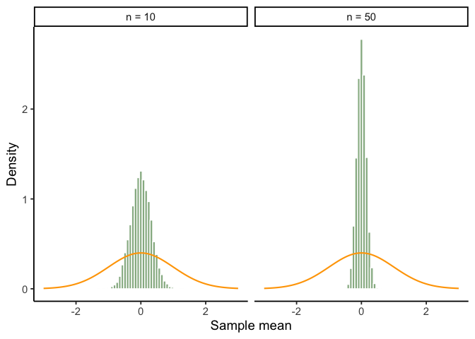
Return to the uniform population of the numbers 1 to 10 from Figure 3.9. Figure 3.15 shows the means of 10,000 samples at each of two sample sizes, \(n = 10\) and \(n = 50\). The population is flat (orange line), but the sampling distribution of the mean (green bars) is bell-shaped at both sample sizes.
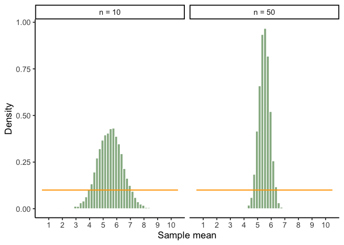
The exponential population in Figure 3.16 is right-skewed, with most values near 0 and a long right tail (orange curve).

At \(n = 10\) the sample means are still a little right-skewed. At \(n = 50\) their histogram is close to a bell shape.
Together, these figures show the central limit theorem at work. The sampling distribution of the mean approaches a normal shape whether the population is normal, flat, or skewed. Its center and spread follow the two facts from before, at every sample size: mean \(\mu\) and standard error
\[SE_{\bar{x}} = \frac{\sigma}{\sqrt{n}}.\]
This formula shows how sample size controls the precision of \(\bar{x}\), meaning how little \(\bar{x}\) varies from sample to sample. As \(n\) increases, the denominator grows and the SE falls. The SE falls with the square root of \(n\). Doubling \(n\) divides the SE by \(\sqrt{2} = 1.41\):
\[SE_\text{new} = SE/1.41 = 0.71 \times SE,\]
a cut of about 30%. Each further increase in sample size gives a smaller gain in precision. In Figure 3.13, going from \(n = 2\) to \(n = 8\), six more observations, cuts the SE from 0.71 to 0.35. Going from \(n = 32\) to \(n = 128\), 96 more observations, cuts it from 0.18 to 0.09.
The facts about sample means in this chapter fall into two groups: three facts about the pile of sample means, and the law of large numbers, which is about a single sample.
The pile of sample means is the means of every possible sample of size \(n\). It is theoretical. A simulation draws many samples (10,000 in this chapter) to approximate it. More draws make the histogram smoother, not narrower. Its width depends on \(\sigma\) and on \(n\), the size of each sample behind one \(\bar{x}\) in the pile, not on how many samples are drawn. For a random sample of \(n\) independent observations from a population with mean \(\mu\) and standard deviation \(\sigma\), Table 3.5 describes the pile.
| Question | Answer | Where you saw it |
|---|---|---|
| Where is the pile centered? | At \(\mu\), at every \(n\) | Figure 3.11, centered on 5.5 |
| How spread out is the pile? | Its standard deviation is the standard error, \(\sigma/\sqrt{n}\), at every \(n\) | Bottom row of Figure 3.13, and the SD of 0.64 in Figure 3.11 |
| What shape is the pile? | Approximately normal when \(n\) is large enough (the central limit theorem). Normal at every \(n\) if the population is normal | Figure 3.15 and Figure 3.16 |
The law of large numbers says that as \(n\) grows, a sample’s statistics settle near the population’s values.
- One sample’s \(\bar{x}\) settles near \(\mu\) (Figure 3.8, and the lime-green line in Figure 3.13). This follows from the standard error: \(\sigma/\sqrt{n}\) shrinks toward 0.
- \(s\) settles near \(\sigma\). The spread of the values stays about the same size as \(n\) grows.
- The sample’s shape settles on the population’s shape. The share of values in each range settles on the population’s share, so a sample’s histogram looks more like the population as \(n\) grows (Figure 3.8). Skewed data stay skewed. Only the pile of sample means becomes approximately normal.
- This needs random sampling. With a biased method, each of these settles on the values of whatever population the method reaches, however large \(n\) is.
3.11.1 How large is large enough?
The CLT says the sampling distribution of the mean approaches normal as \(n\) grows. It does not say how fast. That depends on the shape of the population. The three populations simulated in this chapter show the range:
| Population shape | What this chapter’s simulations show |
|---|---|
| Normal | Sample means are normal at every sample size (Figure 3.14) |
| Flat (uniform, the numbers 1 to 10) | Sample means are already bell-shaped at \(n = 10\) (Figure 3.15) |
| Strongly right-skewed (exponential) | Sample means are still right-skewed at \(n = 10\) and close to a bell shape by \(n = 50\) (Figure 3.16) |
You will often see \(n \ge 30\) given as the sample size at which sample means become roughly normal. No single cutoff works for every population. The exponential example needs more than 30, and a population with a longer tail or extreme outliers needs more still.
The skew fades as \(n\) grows because each unusually large value gets averaged with more ordinary ones. The longer the tail, the more ordinary values it takes.
Later chapters use “once the sample is large enough” to mean a sample size from this table. With a small sample from a skewed population, the sample means may not be close to normal, and Chapter 6 comes back to this case.
3.12 \(z\)-scores
A \(z\)-score is the number of standard deviations a value is above or below its mean. \(z\)-scores are useful for two reasons. Areas under the normal curve translate directly into probabilities. And by the CLT, many averages, such as sample means, are approximately normal, so \(z\)-scores give probabilities for those too.
First, recall the geometry of the normal curve. In Figure 3.17 we draw vertical lines at 0, ±1, ±2, and ±3 standard deviations for a standard normal (\(\mu=0,\sigma=1\)). The labels show familiar areas: about 34.1% between 0 and 1, 13.6% between 1 and 2, and so on. Altogether, about 68.3% of values lie between −1 and +1 SD.
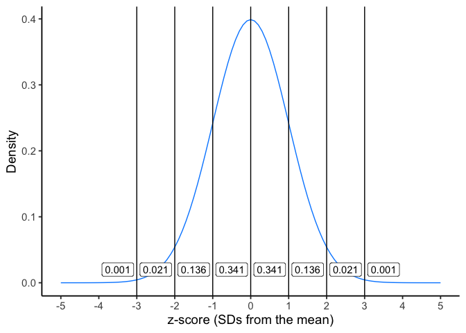
Those same proportions hold for any normal distribution, regardless of its mean or SD. In Figure 3.18 (with \(\mu=100,\ \sigma=25\)), the region from 100 to 125 (one SD above the mean) still contains about 34.1% of values.
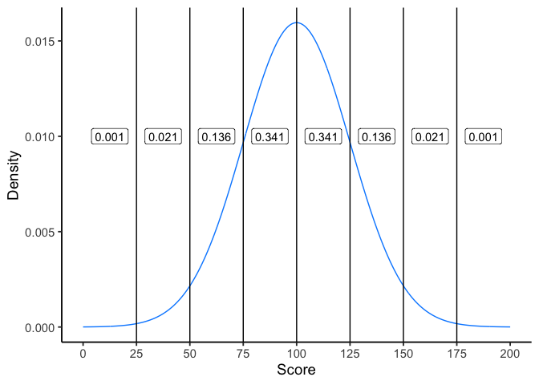
3.12.1 What “standardized” means
Standardizing converts a raw score, the value as measured, into a \(z\)-score by subtracting the mean and dividing by the standard deviation. \(z\)-scores are also called standardized scores.
Standardizing lets you compare values that come from distributions with different means and spreads, because a \(z\)-score’s unit is the standard deviation. A stream that usually runs at 12 °C, with an SD of 2 °C, reads 18 °C one afternoon. A city whose summer days average 25 °C, with an SD of 5 °C, has a 30 °C day.
\[\begin{aligned} \text{Stream: } z &= (18 - 12)/2 = 3 \\ \text{City: } z &= (30 - 25)/5 = 1 \end{aligned}\]
The city’s 30 °C is the larger number, but the stream’s 18 °C is the more unusual reading, and the \(z\)-scores of 3 and 1 show it.
There are two versions, depending on which mean and SD you have:
\[z=\frac{x-\mu}{\sigma} \qquad\qquad z=\frac{x-\bar{x}}{s}\]
The first uses the population mean and SD, when they are known. The second uses the sample mean \(\bar{x}\) and sample SD \(s\), which is the usual situation with real data. Keep each pair together: a population mean goes with a population SD, and a sample mean goes with a sample SD.
Interpretation is the same for both:
\(z=0\) is the mean
\(z=1\) is one SD above the mean
\(z=-2\) is two SDs below the mean
3.12.2 Calculating \(z\)-scores
Example: generate ten observations from a \(\text{Normal}(100, 25)\) distribution.
These ten scores can be standardized both ways. Using the known population values, \(z = (x - 100)/25\). Using only the sample itself, \(z = (x - \bar{x})/s\), with \(\bar{x} =\) 98.79 and \(s =\) 25.19:
| Observation | Score | z (population values) | z (sample values) |
|---|---|---|---|
| 1 | 94.68 | -0.21 | -0.16 |
| 2 | 128.65 | 1.15 | 1.19 |
| 3 | 59.94 | -1.60 | -1.54 |
| 4 | 77.90 | -0.88 | -0.83 |
| 5 | 71.96 | -1.12 | -1.07 |
| 6 | 110.90 | 0.44 | 0.48 |
| 7 | 138.40 | 1.54 | 1.57 |
| 8 | 98.98 | -0.04 | 0.01 |
| 9 | 89.45 | -0.42 | -0.37 |
| 10 | 117.02 | 0.68 | 0.72 |
The two columns are close but not identical, because \(\bar{x}\) and \(s\) are estimates of \(\mu = 100\) and \(\sigma = 25\) from only ten observations.
Once you standardize a score, areas under the normal curve tell you how unusual it is. About 68% of \(z\)-scores fall between −1 and 1, so those values are common. About 13.6% fall between 1 and 2, and another 13.6% between −2 and −1. Values beyond ±2 are rare. About 2.1% fall between 2 and 3 on each side, and about 0.1% fall beyond 3 on each side.
3.13 Estimating population parameters
3.13.1 Why estimate population parameters?
Concrete. A bootmaker wants the mean and spread of adult foot lengths to plan inventory. Measuring everyone is impossible. A well-designed sample can estimate those parameters closely enough to act on.
Abstract. In experiments, we often ask whether a manipulation changes a response. Even if the broader “population” is fuzzy, we still estimate the mean response and its variability under each condition to compare them.
3.13.2 Estimating the population standard deviation
An estimator is unbiased when its expected value, its average across many samples, equals the population parameter it estimates. Estimating the population mean was straightforward, because the sample mean \(\bar x\) is an unbiased estimator of \(\mu\). Standard deviation is trickier.
An estimator is biased if its expected value systematically differs from the true population parameter. The sample standard deviation computed by dividing by \(n\) is such a case: it tends to underestimate \(\sigma\), especially when \(n\) is small.
This is a second meaning of the word. Earlier, a biased sample came from a method that reaches the wrong individuals, like surveying adults only inside coffee shops. A biased estimator misses the parameter on average even when every sample is perfectly random, because of the formula used to compute it, like the SD that divides by \(n\). Both kinds of bias are systematic. They push the result in the same direction on average, which is different from the random scatter of sampling error.
Chapter 2 built the standard deviation dividing by \(N\), the number of scores, and noted in passing that R divides by \(n-1\) instead. With a sample of size \(n\), that uncorrected version is written \(s_n\) below. The rest of this section explains why R uses \(n-1\).
3.13.3 Simulating bias
We can see this by creating a sampling distribution of the standard deviation. Suppose the true population IQ distribution has mean 100 and standard deviation 15. If we draw 20,000 samples of size \(n = 2\) and compute the SD of each, dividing by \(n\), the histogram of those 20,000 values looks like Figure 3.19. If the sample SD had no bias, the average of the 20,000 sample SDs would be close to 15.

Even though the true \(\sigma\) is 15, the average sample SD is only about 8.5. The sampling distribution of the sample mean, by contrast, is centered on \(\mu\).
Repeating the simulation at each sample size up to 10 compares the two estimators:
Figure 3.20 shows that the sample mean stays centered on \(\mu\) (unbiased).
Figure 3.21 shows that the sample SD underestimates \(\sigma\) when \(n\) is small, though the bias shrinks as \(n\) grows.
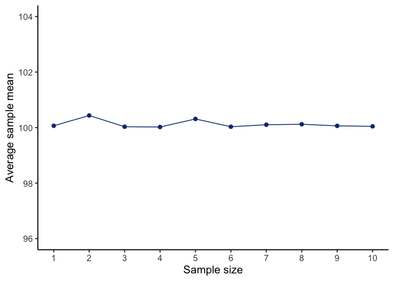
Figure 3.21 shows the sample standard deviation as a function of sample size. Each point is the average of 5,000 sample SDs, all from samples of the size on the x-axis. The dark blue line divides by \(n\), as in Chapter 2. The light blue line divides by \(n - 1\), the correction explained in the next section. Unlike the mean, the uncorrected sample standard deviation does not center on the population value. Small samples especially understate variability. The dark blue line averages about 8.5 at \(n = 2\) and is still about 1 below 15 at \(n = 10\).
![Line plot of the average of 5,000 sample standard deviations against sample size, from 2 to 10, with two series and an orange dashed horizontal reference line at the true population SD of 15. The dark blue series, dividing by n, starts near 8.5 at sample size 2 and climbs toward 15 but is still about 1 below it at sample size 10. The light blue series, dividing by n minus 1, starts near 12 at sample size 2 and is close to 15 by sample size 10. Both series are below the reference line at every sample size, and the gap is largest at the smallest sample sizes.](03-SamplesPopulations_files/figure-html/fig-3estimatorbiasB-1.png)
3.13.4 Why variance needs a small correction
Sample values are closer to their own mean than to \(\mu\). Picture a tiny sample of \(n=3\) values. The sample mean \(\bar{x}\) might be close to the true population mean \(\mu\), or it might be far from it, and we don’t know in advance which. But \(\bar{x}\) is always computed from those three sample points, so it is always at the center of those specific points. As a result, distances from the sample points to \(\bar{x}\) tend to be a little shorter, on average, than distances from those same points to the true \(\mu\) would be.
One small sample shows how this works. The numbers are invented. Take the three values 3, 4 and 8, so \(\bar{x} = 5\), and say the population they came from has mean \(\mu = 6\). Figure 3.22 draws the distance from each value to \(\bar{x}\) in one panel and to \(\mu\) in the other. Squaring each distance and adding them up gives the sum of squared distances around each center:
| Center | Squared distances | Sum |
|---|---|---|
| \(\bar{x} = 5\) | \((3-5)^2 + (4-5)^2 + (8-5)^2 = 4 + 1 + 9\) | 14 |
| \(\mu = 6\) | \((3-6)^2 + (4-6)^2 + (8-6)^2 = 9 + 4 + 4\) | 17 |
| Gap | \(17 - 14\) | \(3 = 3 \times (5 - 6)^2\) |

The sum of squared distances around \(\bar{x}\), 14, is smaller than the sum around the true mean, 17, because \(\bar{x}\) was calculated from these same three values. This happens in every sample. The sum of squared distances is smallest around the sample’s own mean, so it is never larger than the sum around \(\mu\).
The gap between the two sums has an exact size, and that size is where the \(n - 1\) comes from. In this sample the gap is
\[\begin{aligned} 17 - 14 &= 3 \\ n(\bar{x} - \mu)^2 &= 3 \times (5 - 6)^2 = 3 \end{aligned}\]
The same holds in every sample. The sum around \(\mu\) always equals the sum around \(\bar{x}\) plus \(n(\bar{x} - \mu)^2\). The standard error is the standard deviation of the sampling distribution of \(\bar{x}\), which is centered at \(\mu\), so the average of \((\bar{x} - \mu)^2\) is the squared standard error, \(\sigma^2/n\). The gap therefore averages \(n \times \sigma^2/n = \sigma^2\). Each \((x_i - \mu)^2\) averages \(\sigma^2\), because that is the definition of the population variance, so the sum of \(n\) of them around \(\mu\) averages \(n\sigma^2\). The sum around \(\bar{x}\) is the sum around \(\mu\) minus the gap, so it averages \(n\sigma^2 - \sigma^2 = (n-1)\sigma^2\). Dividing it by \(n - 1\) gives \(\sigma^2\) on average.
Variance and SD are built from these squared distances, so they come out too small as well. Dividing the sum around \(\bar{x}\) by \(n\) gives a variance that underestimates \(\sigma^2\), and the sample SD inherits that bias.
Writing it out, the uncorrected sample variance is
\[s_n^2 = \frac{1}{n}\sum_{i=1}^n (x_i - \bar{x})^2,\]
and it systematically underestimates \(\sigma^2\), the population variance. The corrected version divides by \(n - 1\) instead:
\[s_{n-1}^2 = \frac{1}{n-1}\sum_{i=1}^n (x_i - \bar{x})^2.\]
This \(s_{n-1}^2\) is an unbiased estimator of \(\sigma^2\), so its average across many samples equals the true population variance. Take the square root of either formula to get back to an SD. Because the square root of an average is not the same as the average of the square roots, even the corrected \(s_{n-1}\) is still slightly biased for \(\sigma\), and the bias is largest in very small samples. With \(\sigma = 15\), the corrected SD averages about 12.0 at \(n = 2\) and 13.3 at \(n = 3\), but about 14.6 at \(n = 10\) and 14.9 at \(n = 30\). Once \(n\) is 10 or more the leftover bias is small, so the square root of the unbiased variance works well as the sample SD.
A note on notation. The subscripts on \(s_n^2\) and \(s_{n-1}^2\) exist only so we can contrast the two formulas here. Everywhere else in this book, and in most other writing you will encounter, plain \(s^2\) means the corrected version that divides by \(n-1\), and plain \(s\) is its square root, the sample standard deviation. That is also what R’s sd() and var() return. When you see \(s\) in the \(t\)-test formulas in Chapter 6 and after, it is this quantity.
One sample shows why the distances run short. Bias is about the average over many samples, and a single sample’s SD can come out above \(\sigma\) or below it. Figure 3.23 checks the average by drawing 8,000 samples at each of two sample sizes, \(n = 3\) and \(n = 30\), from the IQ population used above (\(\mu = 100\), \(\sigma = 15\)). For each sample it computes the SD both ways, dividing by \(n\) and by \(n - 1\). Each panel is a histogram of 8,000 sample SDs.
![A 2 by 2 grid of histograms: rows show the uncorrected sample SD (divide by n) versus the corrected sample SD (divide by n minus 1), and columns show sample sizes of 3 and 30, each built from 8000 simulated samples. All four panels share one x-axis. A dashed orange line in every panel marks the true population SD of 15, and a solid blue line marks the average sample SD for that panel. At n = 3, the histograms are wide and right-skewed, and the blue line is noticeably left of the orange line in both rows, more so in the top row. At n = 30, the histograms are much narrower, and the blue and orange lines are nearly on top of each other in both rows.](03-SamplesPopulations_files/figure-html/fig-3sdbias-simulation-1.png)
The orange dashed line marks the true \(\sigma = 15\), and the blue solid line marks the average of the 8,000 sample SDs in that panel. The averages shown in each panel come from 8,000 random samples, so they differ slightly from the exact values given earlier, for example 13.25 against 13.3 at \(n = 3\).
First, compare the top row (divide by \(n\)) to the bottom row (divide by \(n-1\)). The blue line is closer to the orange line in the bottom row, so the correction helps. Second, compare the columns. At \(n = 30\) the bias is much smaller than at \(n = 3\), in both rows. Dividing by \(n\), the average sample SD is 10.8 at \(n = 3\) and 14.6 at \(n = 30\). The \(n-1\) correction matters most for small samples and becomes negligible as sample size grows. Third, compare the widths. The columns share one x-axis, and the \(n = 30\) histograms are much narrower than the \(n = 3\) histograms, so at \(n = 30\) a typical sample SD is much closer to \(\sigma\).
On an exam, if you are asked for the sample standard deviation, use the \(n-1\) version unless told otherwise. R’s sd() already does this.
NoteNote: The law of large numbers and the CLT for the sample SD
Two ideas from earlier in this chapter also apply to the sample SD:
- Law of large numbers. As \(n\) grows, a single sample’s \(s\) settles near \(\sigma\), the same way \(\bar{x}\) settles near \(\mu\). In Figure 3.23, the narrower histograms at \(n = 30\) show this. The shrinking gap between the blue and orange lines is a different fact, that the bias of \(s\) gets smaller as \(n\) grows.
- Central limit theorem. The CLT as this chapter states it is about the sampling distribution of the mean. With large samples the sample SD also becomes close to normal, but at \(n = 3\) the histograms of sample SDs are right-skewed, so we cannot assume sample SDs are normal.
To summarize:
| Symbol | Definition | Known? |
|---|---|---|
| \(s^2\) | Sample variance (divide by \(n-1\)), and \(s\) its square root, the sample SD | Yes, calculated directly from data |
| \(s_n^2\) | The uncorrected sample variance (divide by \(n\)), biased small; used above only to show why the correction is needed | Yes, but not what we report |
| \(\sigma^2\) | Population variance, with \(\sigma\) the population SD | No, almost never known exactly |
3.14 Estimating a confidence interval
So far, we’ve focused on using sample data to estimate population parameters, but every estimate comes with some uncertainty. A single number, like “the mean IQ in this sample is 104,” does not show how confident we are. A confidence interval (CI) is a range of plausible values for the population mean, built by a method that captures the true mean a known percentage of the time, such as 95%, across repeated samples.
You’ll use this directly in Chapter 4, where a confidence interval becomes one of three equivalent ways to decide whether to reject the null hypothesis, \(H_0\). The same cutoff, 1.96, appears there as a critical value. In a confidence interval, 1.96 standard errors sets how far the interval reaches on each side of \(\bar{x}\). In a test, it marks how far the test statistic must be from 0 before we reject \(H_0\).
Sample means fall within about 1.96 standard errors of \(\mu\) 95% of the time. Thanks to the central limit theorem, we know the sampling distribution of the mean is approximately normal. In a normal distribution, 95% of values fall within about 1.96 standard deviations of the mean.
The standard deviation of that sampling distribution is the standard error, so 1.96 standard deviations of \(\bar x\) are 1.96 standard errors. If we knew the population mean and SD (\(\mu\), \(\sigma\)), the standard error would be
\[SE_{\bar{x}} = \frac{\sigma}{\sqrt{n}}\]
NoteNote: Which direction?
The switch from probability to statistics. Until now, every simulation in this chapter started from a population we chose and asked what samples it produces. That is probability, model → data. Here we start from one observed \(\bar{x}\) and reason back to \(\mu\), which we don’t know. That is statistics, data → model, and it is the direction the rest of the book runs.
The statement “\(\bar x\) is within 1.96 standard errors of \(\mu\)” is the inequality \(|\bar{x} - \mu| \le 1.96\,\sigma/\sqrt{n}\). Without the absolute value, it says \(-1.96\,\sigma/\sqrt{n} \le \bar{x} - \mu \le 1.96\,\sigma/\sqrt{n}\). Subtracting \(\bar{x}\) from each part and multiplying by \(-1\), which reverses the inequality signs, gives
\[\bar{x} - 1.96\,\frac{\sigma}{\sqrt{n}} \le \mu \le \bar{x} + 1.96\,\frac{\sigma}{\sqrt{n}}\]
so the 95% confidence interval is
\[CI_{95} = \bar{x} \pm 1.96\,\frac{\sigma}{\sqrt{n}}\]
For a level other than 95%, replace 1.96 with the corresponding normal quantile. For 70%, 15% is left in each tail, so the cutoff is the 85th percentile of the standard normal, qnorm(0.85) = 1.04.
The \(\pm\) form is how you compute the interval, not how you report it. Report the interval by its two bounds, in square brackets. For example, a sample mean of 50 with a standard error of 2 gives \(50 \pm 1.96(2) = 50 \pm 3.92\), reported as 95% CI [46.1, 53.9].
What the 95% means
The 95% describes the method, not any one interval. Imagine repeating the whole process many times: draw a new sample, compute its \(\bar{x}\), build a new interval. About 95% of those intervals would contain \(\mu\), and about 5% would miss it. The interval you have either contains \(\mu\) or it does not, and you do not know which.
Figure 3.24 shows 50 such intervals, each from a sample of \(n = 25\) from the IQ population, \(\text{Normal}(100, 15)\). Each line is one sample’s interval. Most cross the dashed line at \(\mu\), and the red ones miss it. A 95% method misses about 5% of the time, or about 2.5 of every 50 intervals on average.
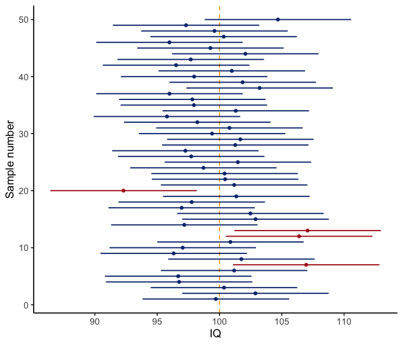
CautionWarning: Don’t misread a confidence interval
Table 3.6 sets each misreading beside the correct reading.
| Not this | This |
|---|---|
| There is a 95% chance that \(\mu\) is in [46.1, 53.9] | About 95% of intervals built this way contain \(\mu\) |
| 95% of individual values are between 46.1 and 53.9 | The CI is a range for the population mean \(\mu\). Individual values spread much more widely. |
| \(50 \pm 3.92\) | 95% CI [46.1, 53.9] |
When \(\sigma\) is unknown
This formula assumes we know the population standard deviation \(\sigma\). But in practice, \(\sigma\) is almost never known. When it is unknown, we estimate the same standard error by putting the sample standard deviation \(s\) in place of \(\sigma\). The result is an estimated standard error, written with the same symbol:
\[SE_{\bar{x}} = \frac{s}{\sqrt{n}}\]
The \(n-1\) correction is already built into \(s\), so the denominator here is still \(\sqrt{n}\).
Estimating \(\sigma\) with \(s\) adds uncertainty, because \(s\) itself varies from sample to sample, as Figure 3.23 showed. To account for this, we swap the normal cutoffs for those from the \(t\)-distribution (Chapter 6), which depends on sample size. With small \(n\), the \(t\) values are larger, so the CI widens. At \(n = 5\) the 95% cutoff is 2.78 instead of 1.96. As \(n\) grows, \(t\) values shrink toward 1.96 (2.05 at \(n = 30\)), and the \(t\)-based CI becomes indistinguishable from the normal version.
A confidence interval shows how precise an estimate is. A larger \(n\) gives a smaller standard error and so a narrower interval. With \(\sigma = 15\):
\[\begin{aligned} n = 25: \quad SE &= 15/\sqrt{25} = 3, \quad \bar{x} \pm 1.96 \times 3 = \bar{x} \pm 5.88 \\[1.2ex] n = 100: \quad SE &= 15/\sqrt{100} = 1.5, \quad \bar{x} \pm 1.96 \times 1.5 = \bar{x} \pm 2.94 \end{aligned}\]
A wide interval means the estimate is imprecise, and a narrow one means it is precise.
3.15 Chapter Summary
Why it matters. Every inference in the rest of the course reasons from a sample you have to a population you don’t. This chapter covers the tools that justify that reasoning, and explains why they work even when your data are not normal.
Core ideas
- Probability runs model → data, and statistics runs data → model. Probability starts from a known process and predicts what data it produces. Statistics starts from observed data and reasons backward to the process. The rest of the book is the second direction.
- Two probability rules. A conditional probability counts only the outcomes where a condition holds, and every \(p\)-value is one. Independent events multiply, and every test in this book assumes independent observations.
- Statisticians describe a population with a probability distribution. That description lets us calculate how samples from it behave.
- Law of large numbers. As \(n\) grows, a sample statistic settles near the value for the population your method actually samples. With random sampling, that is the population value. A biased method converges on the wrong value.
- Sampling distributions. Any statistic computed over repeated samples has its own distribution. The sampling distribution of the mean is the one most of classical inference uses, and its spread is the standard error, \(\sigma/\sqrt{n}\), estimated by \(s/\sqrt{n}\) when \(\sigma\) is unknown.
- The central limit theorem. As \(n\) grows, the sampling distribution of the mean approaches normal regardless of the population’s shape, as long as its standard deviation is finite. Because of that, methods that rely on a normal sampling distribution work on data that are not themselves normal, once the sample is large enough. The center (\(\mu\)) and the spread (\(\sigma/\sqrt{n}\)) do not come from the CLT. They hold at every \(n\).
- \(z\)-scores. A \(z\)-score gives a value’s distance from the mean in standard deviations, so areas under the normal curve turn into probabilities.
- The sample SD is a biased estimator. The sample mean equals \(\mu\) on average, but the sample SD systematically underestimates \(\sigma\), because the values in a sample are closer to their own mean than to \(\mu\). Dividing by \(n-1\) makes the variance unbiased and removes most of the SD’s bias. The correction matters most when \(n\) is small.
- Confidence intervals express uncertainty. A CI reports a range of plausible values for \(\mu\). The 95% describes the method: across many repeated samples, about 95% of intervals built this way would contain \(\mu\). It is not a 95% probability that any one interval does.